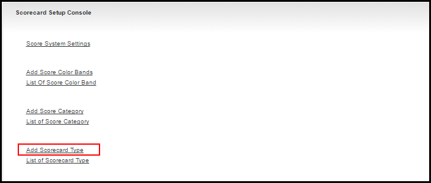
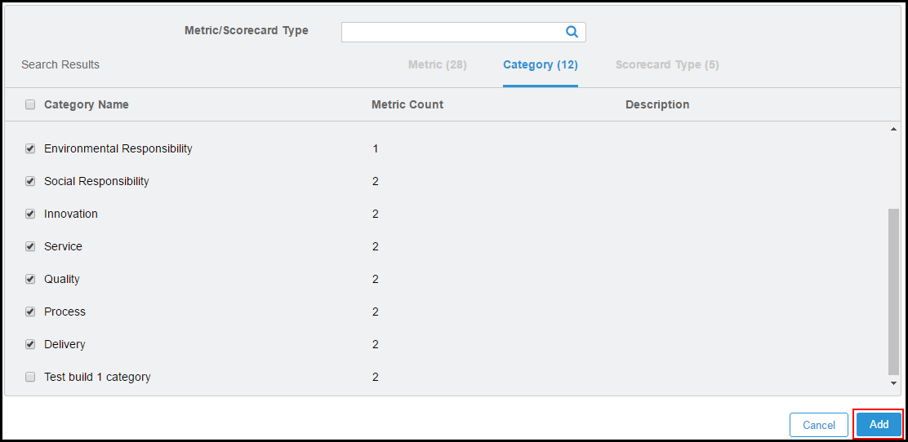
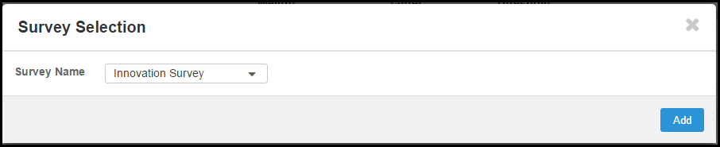
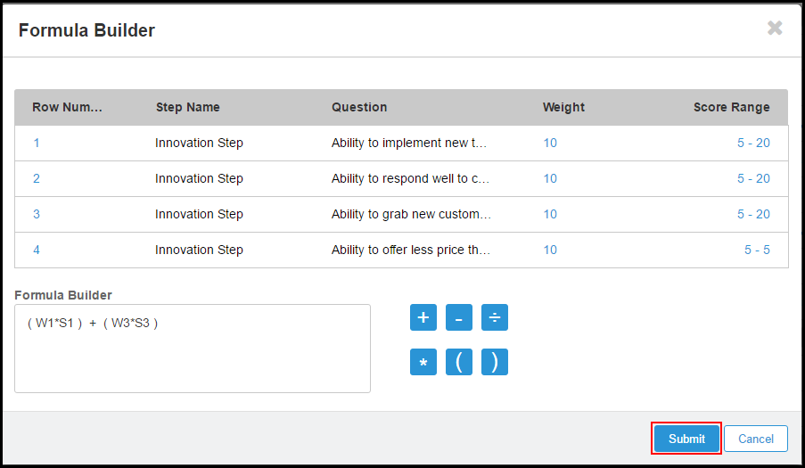
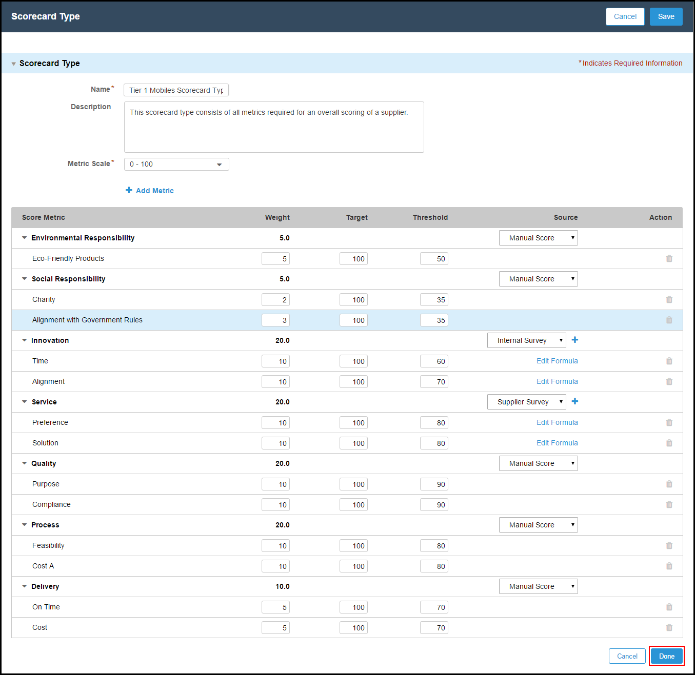
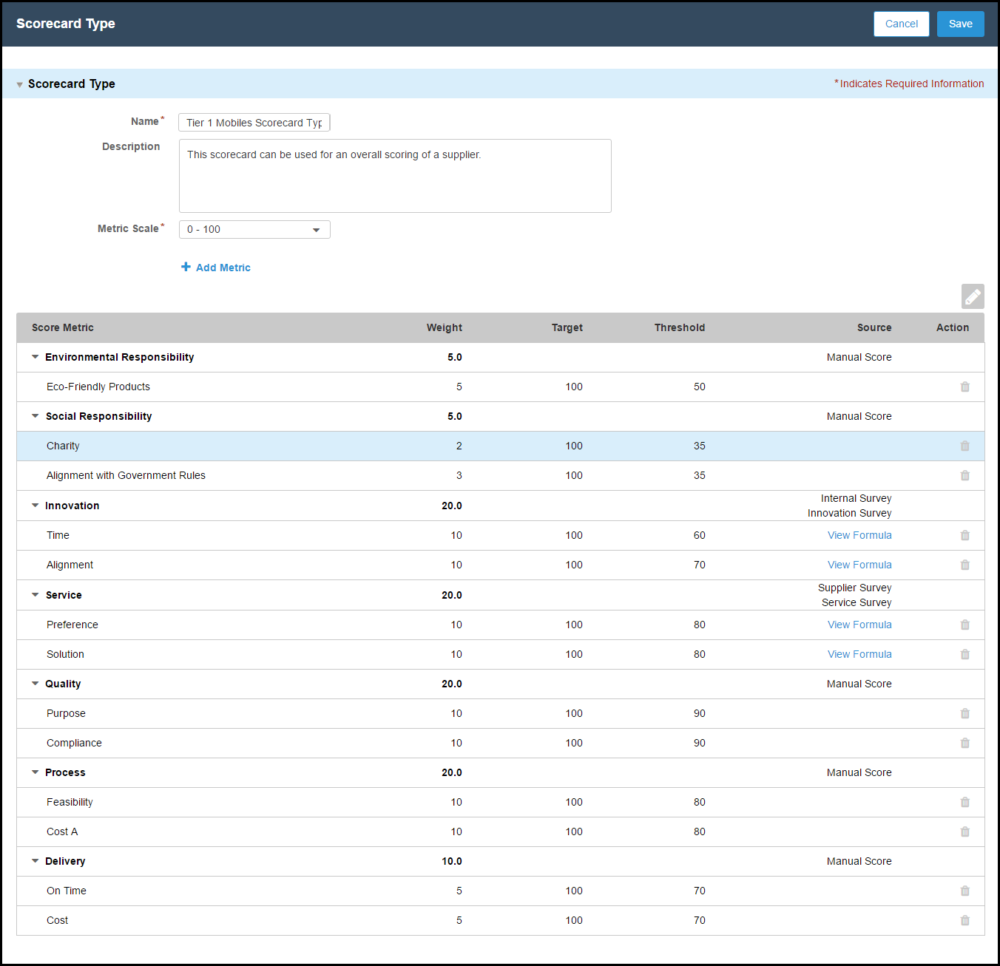
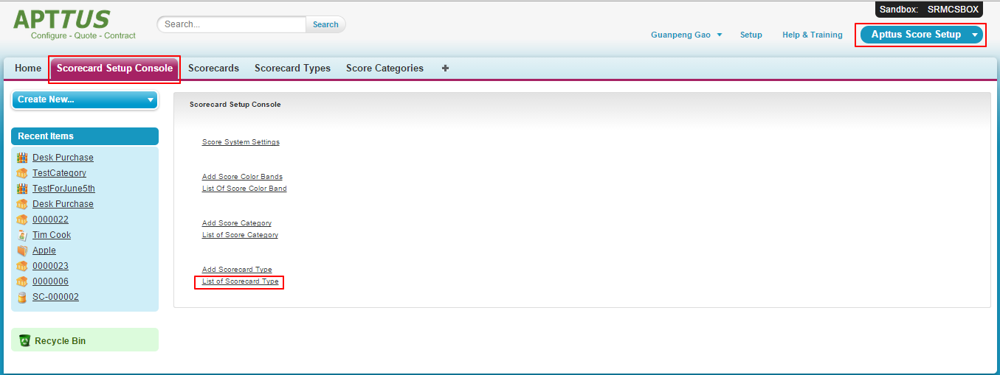

Once you have defined the categories and related metrics, you can define the Scorecard itself using Scorecard Type as the template (for example, word or merge template).
Scorecard Type enables you to.
Create multiple Scorecard types, depending on your needs.
Choose what parameters or criteria you need to evaluate.
Define as many metrics for a given category as you need. However, Scorecard Type provides you the flexibility to choose any particular metric in the category to evaluate.
Define a scale for each metric.
You can provide a collection of all the Score metrics that are required to evaluate a given category. For example, Desk Purchase category has four metrics, and you can evaluate it based on only one metric or other metrics of your choice.
You will define the Scorecard Type (template) using the parameters and metrics described in the following table.
Field Name
Description
Weight
Gets you the collective Score for the Scorecard itself. This helps you prorate the performance to the total score of 100, and provides the weightage factor, or ratio to evaluate a Score Metric for a given Category.
Note:
Note:
The sum of the Weights from all the metrics must be 100.
The Weight is determined by your business requirements. For example, if metric x, is more important than metric y, then metric x and metric y can be given the weight 10 and 5 respectively.
Target
The rating that the metric should ideally achieve. The possible values depend on the Metric Scale that your administrator has selected. (10 or 100).
Threshold
The minimum score the metric must reach to be evaluated.
To set up a scorecard Type
Click the Scorecard Setup Console tab.
Click Add Scorecard Type.

Enter a Name for your Scorecard Type.
Enter a short Description of your scorecard type.
From Metric Scale picklist menu, select the metric scale that you want to evaluate the suppliers. The available options are:
Option
Description
0-10
Select this option if you want to evaluate your suppliers from 0 to 10 scale. 0 being the lowest, 10 being the highest.
0-100
Select this option if you want to evaluate your suppliers from 0 to 100 scale. 0 being the lowest, 100 being the highest.
Click Add Metric.
Type a keyword in Metric/Scorecard Type in the search box to search for a specific metric or scorecard.-or-Click
to display all Metrics, Categories, and Scorecard Types.
Select the check box for the metrics or categories or scorecard types that you want to add.
Click Add.

Enter Weight, Target, and Threshold for each Score Metric.
Note:
Note
The sum of Weight column must be 100.
Under the Source column, select a source of scoring for each category. The available options are.
Option
Description
Manual Score
Select this option if you want to enter the scores manually, by clicking the Evaluate button in the relevant master scorecard.
Internal Survey
Select this option if you want the system to calculate the scores, as entered in the Wizard Design. You must mention the formula to calculate the scores in Master Scorecard.
Note: Only one survey can be selected at a time.
Supplier Survey
Select this option if you want the suppliers to score themselves using surveys. You must mention the formula to calculate the scores in Master Scorecard.
Note: Only one survey can be selected at a time.
To add a survey for Internal Survey or Supplier Survey, click
.
On the Survey Selection pop-up, select the name of your survey that you want to associate to the source of your survey from Survey Name picklist.
Note:
is visible only for the categories for which you have selected Internal Survey or Supplier Survey.

Click Add formula. All the steps of the survey that you have selected are displayed in the Formula Builder window.
Note:
Add Formula link is visible for all metrics of a category for which you have selected Internal Survey or Supplier Survey.
In the Formula Builder text box, generate your formula to calculate the scores.
Option
Description
Row Number
Selecting any Row Number will display Wn*Sn in the Formula Builder text box, where n is the Row Number of the row that you have selected.
Weight
Selecting any Weight will display Wn in the Formula Builder text box, where n is the Row Number of the row that you have selected.
Score Range
Selecting any Score Range will display Sn in the Formula Builder text box, where n is the Row Number of the row that you have selected.

Tip:
Use Case
The following table displays some formulas, for demo purpose only.
Category
Metrics
Survey
Scenario
Formula
Innovation
Alignment Time
Innovation Survey
You want to evaluate the suppliers only for their Alignment and Time areas.
(W1*S1) + (W2*S2)
You want to evaluate the suppliers only for Alignment area.
W2*S2
You want to evaluate the suppliers only for Time area.
W1*S1
Service
Preference Schedule
Supplier Survey
You want to evaluate the suppliers only for their Preference and Schedule areas.
(W2*S2) + (W4*S4)
You want to evaluate the suppliers only for their Preference area.
(W2*S2)
You want to evaluate the suppliers only for their Schedule area.
(W4*S4)
You can set the formulas as per your business requirements. You can apply basic mathematical functions.
Click Submit. Repeat steps 14 and 15 for each score metric.
After you are done adding formulas to each score metric, click Done.

To edit the Score Metric, click the
icon.-or-To save the scorecard type, click Save. 
To edit scorecard type
Warning:
You cannot edit a Scorecard Type if you are using it in a published Master Scorecard. You can clone the existing scorecard type making the necessary changes. However, you cannot use the cloned scorecard type in a published Master Scorecard.
Click the Scorecard Setup Console tab.
Click List of Scorecard Types. 
Select the appropriate scorecard type and click Edit.
Warning:
A Scorecard Type cannot be edited when it is associated with a published Master Scorecard.
To clone the scorecard type, click Clone.
Make necessary changes and click Save to confirm your changes.
You can perform any of the following actions as well.
Icon
Action
Click to collapse the score metrics and display the headers only.
Click to expand the score metrics and display the headers with all score metrics.